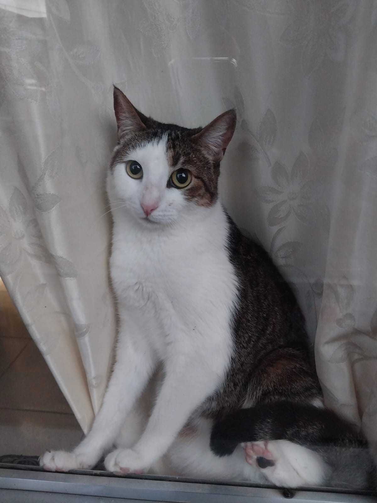

iris
iris es una gata muy hermosa y tranquila,generalmente se la pasa durmiendo o en la ventana viendo pajarito que pasan volando. Pero en la noche empieza a correr por todos lados
iris es una gata muy hermosa y tranquila,generalmente se la pasa durmiendo o en la ventana viendo pajarito que pasan volando. Pero en la noche empieza a correr por todos lados
orion es lo contrario a iris siempre quiere estar detras de todas las personas de mi familia no le gusta que lo cojan,pero le encanta jugar con nosotros y es muy energico
rayzer le encanta cuando ve a cualquiera de nosotros se alegra tanto que es contagioso, le gusta mucho salir a jugar y que le tiremos una pelota para que el corra a cogerla, lo queremos mucho por esa alegria con la que siempre vive.

Max es un perro mestizo lleno de energía y cariño. Siempre está listo para salir a caminar y mover la cola apenas escucha la palabra “paseo”. Aunque es juguetón y travieso, también sabe cuándo quedarse quieto y acompañarte en silencio. Su mirada tierna hace que cualquiera se sienta en casa.

Luna es una gata elegante y curiosa. Le encanta dormir en los rincones más cálidos de la casa y observar todo desde lo alto de los muebles. Aunque al principio es reservada, cuando toma confianza se convierte en una gran compañera, buscando mimos y ronroneando con fuerza. Es la reina del hogar.

Rocky es un perro guardián con corazón noble. Siempre está atento a cualquier ruido extraño, pero en realidad lo que más disfruta es jugar con su pelota favorita. Es muy protector con la familia y no se despega de quienes quiere. Su lealtad y alegría hacen que cada día sea más especial.